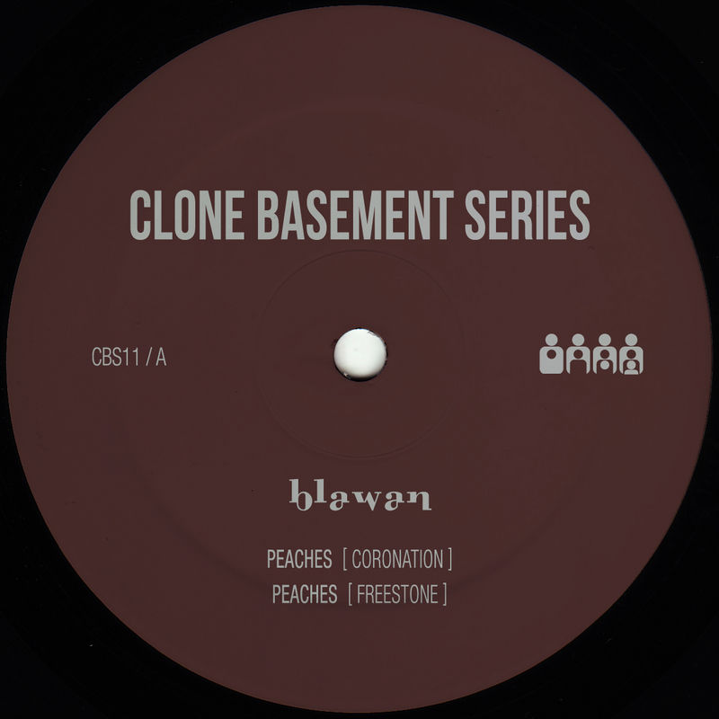

Julian's Secret Domain - Music Reviews
Back to music reviews
Blawan - Peaches EP (2011)
acid techno/industrial techno
A pristine 20 minute slab of concrete-smooth industrial techno. The rhythms will tesselate into your brain cavities like nothing else, as every second of the runtime is warranted and impeccably executed. Needless to say the percussion sounds are flat-out brilliant, carrying an inimitable gravity and vitality that has become signature of Blawan in the decade or so since this release. This EP perfectly demonstrates his ability to craft the most astounding dystopian techno grooves without compromising the fact that above all, this fucking BANGS.
Easily the strongest item in his solo discography, and it runs SHEWORKS005 close for the best thing he's been part of so far. Essential listening for all fans of contemporary techno.
4.5/5